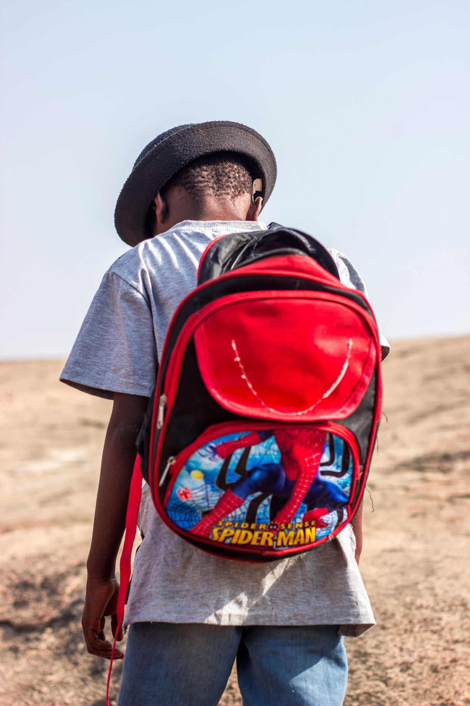
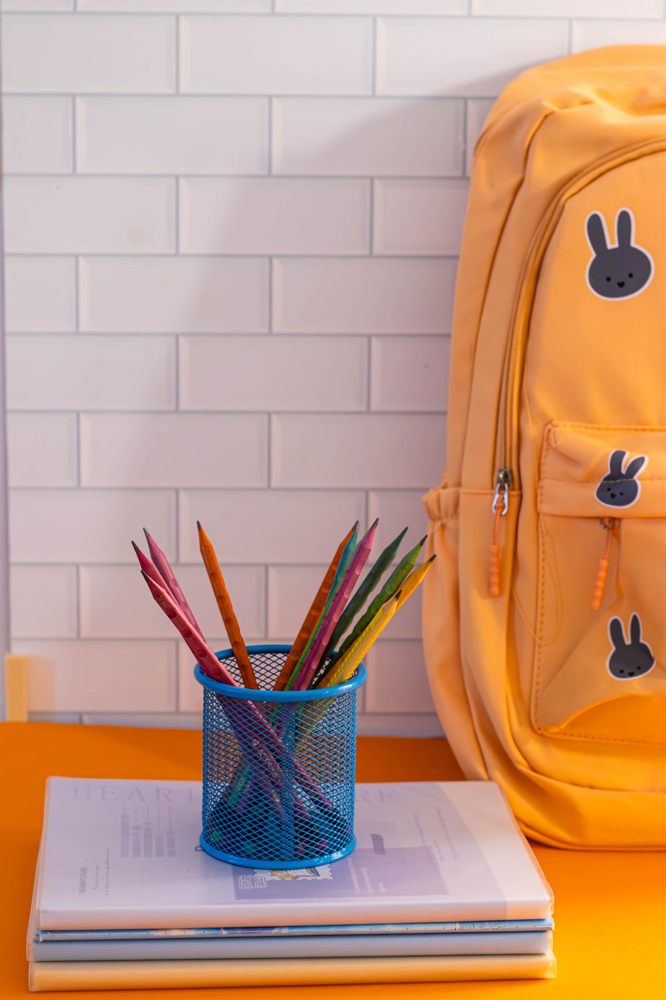
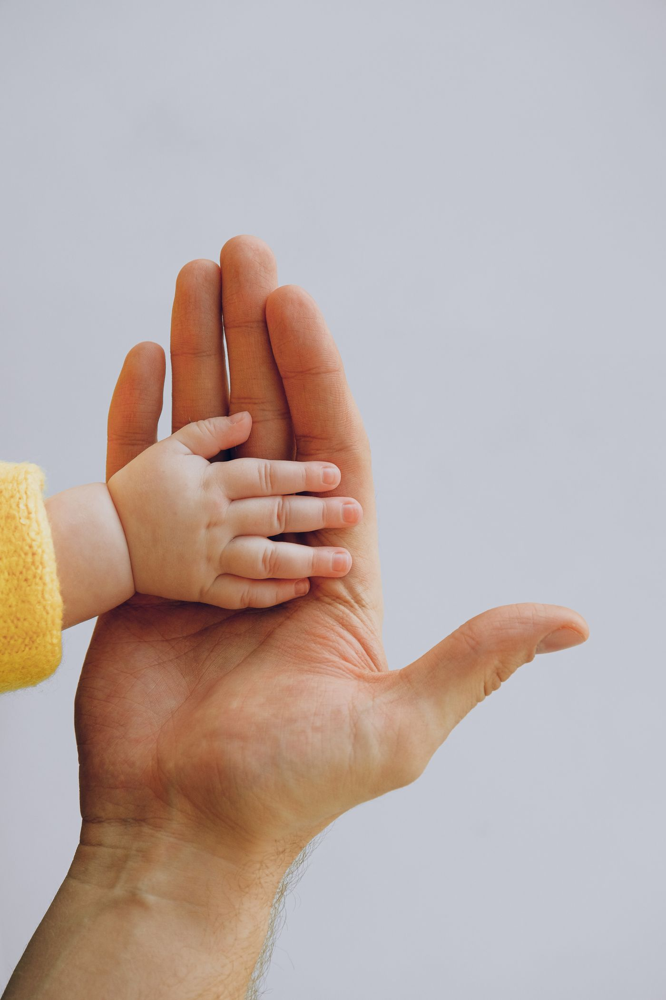
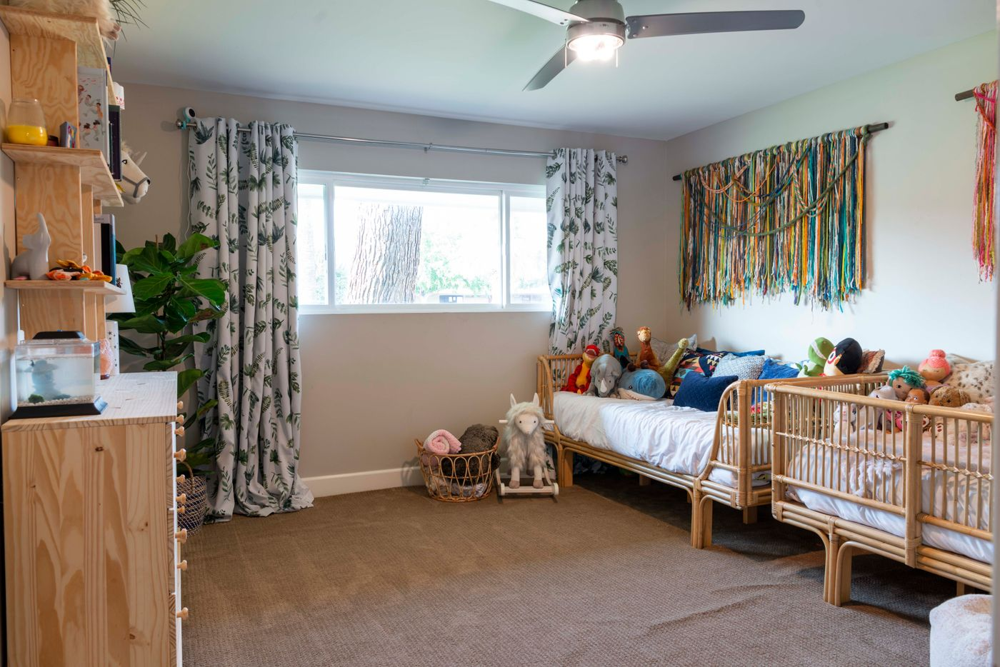
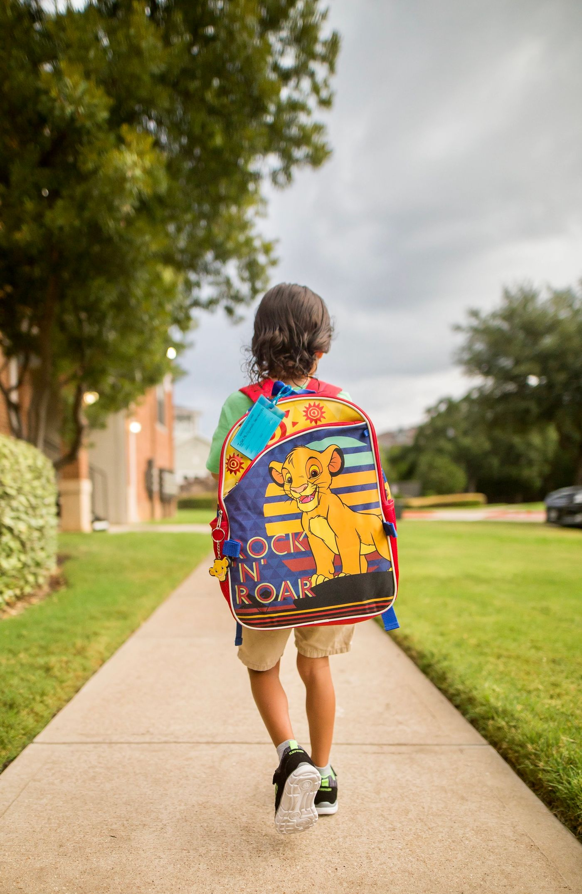
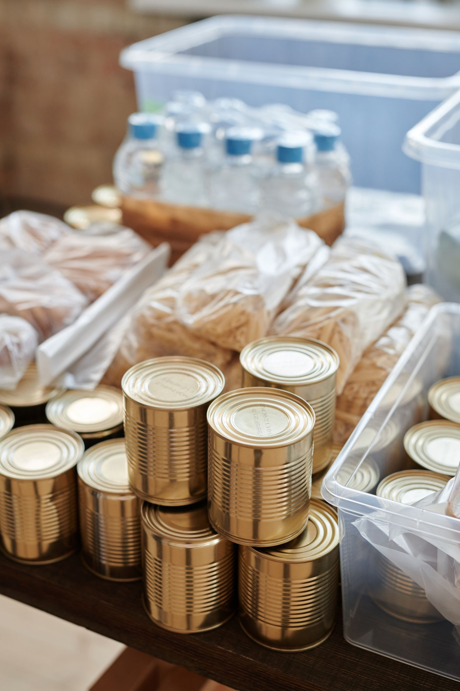

Help write the next chapter.
Aarohan Child Welfare Trust gives children a safe home, learning and love, so their story can begin again.

Challenges children face
For many children, growing up means going without.
- 01
Hunger
Too many nights end without a proper meal.
- 02
No schooling
Without books and a teacher, doors stay closed.
- 03
No safe home
Streets and unsafe places replace a bed and a roof.
- 04
No one to listen
Every child needs a trusted adult to turn to.
No child left to face tomorrow alone.
A safe home
Shelter that feels like family.
A fair start
Education and skills to dream bigger.
Lasting care
Meals, health and a listening ear.


Where your support goes
Four steps from hardship to hope
- Step 1
Listen first
We meet each child and family with respect, and learn what they need.
- Step 2
Give safety
A secure home and trusted guardians help children feel calm again.

- Step 3
Build learning
Schooling, tutoring and skills turn potential into progress.
- Step 4
Grow independence
We walk beside children as they gain confidence for adult life.

Small acts. Lifelong difference.
Give, sponsor, volunteer or simply share our story. Every action helps a child rise.

Every child deserves a brighter tomorrow.
Reach out today and be part of their story.